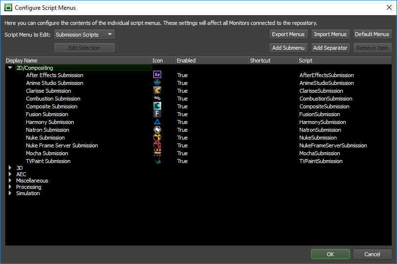

Script Menus¶
Overview¶
There are many scripts that ship with Deadline, and it’s more than likely that you don’t need to use them all, especially the submission scripts. Via Monitor -> Power User Mode -> Tools -> Configure Script Menus, you can configure the contents of the individual script menus to only display what you use. You can also set icons and keyboard shortcuts for your script menu items. If a script menu item has the same shortcut as an existing menu item, the script menu item’s shortcut will take precedence.
Note though that these settings will affect all Monitors that connect to this Repository.
Menu Editing Options¶
Script Menu to Edit: A drop-down list of the available scripts in Deadline that can be configured. Grouped by category.
Edit Selection: A number of additional editing options are available depending on the category of script. See Edit Selection for more details.
Export Menus: Export the current menu layout to an external *.menu file for sharing / backup purposes.
Import Menus: Import an external *.menu file to become the new menu layout for all users.
Default Menus: Reset ALL menus to their default, shipping version in Deadline.
Add Submenu: Add a new sub menu to the existing list of sub menus.
Add Separator: Add a menu separator to the existing menu layout.
Remove Item: Remove the currently selected menu item.
Edit Selection¶
Depending on the currently selected script’s category, some of the following options will be available for users to customize script functionality:
Display Name: The default shipping script name can be customized here as per user preference.
Enabled: If enabled, the script will be visible to users or disabled, and the script will be hidden from users.
Enable Multiselect: If enabled, the script will be available when multiple items are selected such as multiple Jobs or Workers.
Keyboard Shortcut: A custom keyboard shortcut can be applied here, which will override any identical keyboard shortcut if used elsewhere in Deadline.
Clear Shortcut: Pressing this button will remove any keyboard shortcut that may have been applied to this script.
Script Icon: A custom *.ico file (16x16) can be applied to a script for display purposes. Note, you can browse and add a local *.ico file as it is uploaded and stored in the database for all machines to gain access to it.
Clear Icon: Pressing this button will remove any icon file that may have been applied to this script.
Configure Plugins: Configure the selected script to only be available for certain application plugins in the Monitor.
Configure States: Configure the selected script to only be available for certain Job states in the Monitor.
Configure Report Types: Configure the selected script to only be available for certain report types in the Monitor.

{kind=link}
{kind=link}
{kind=link}